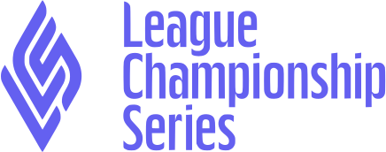
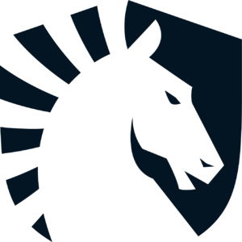
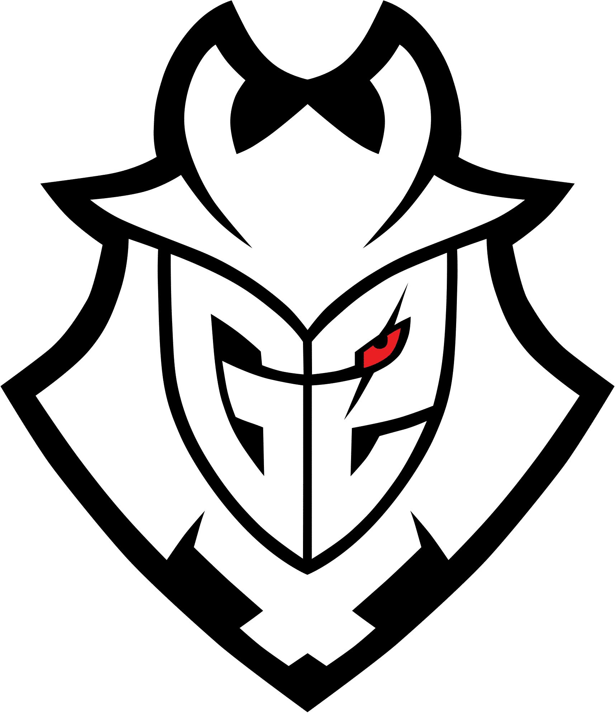

The LCS had it's lowest viewership in years during the 2021
summer split and if they aren't careful it will continue to drop.

League of Legends has consistantly been the worlds largest Esport since its creation in
2013. In order to organize professional play between different parts of the world Riot
Games (the creator of League of legends) seperated play between different regions, the
4 major regions being LPL, LCK, LEC, and LCS. The League of legneds championship series
(LCS) is the professional league that is hosted in North America. It consists of 10 teams
that play in Los Angeles, California during the spring and summer of every year.
Important Information to Know

Team Liquid is an LCS team that joined the league back in 2015 they have aquired
4 trophies during their time playing and have consistently been within the top
3 teams in the league and is known for having a slow and calculated playstyle.

G2 is a team in the League of Legends European League (LEC) that has won the LEC
8 times which is more than any other LEC team. G2 is well known for their big
spending to get the best players in the league.
The increased spending bubble within the LCS and LEC are impacting some of the best
players by not giving them the opportunity to play in the upcoming spring 2022 season.